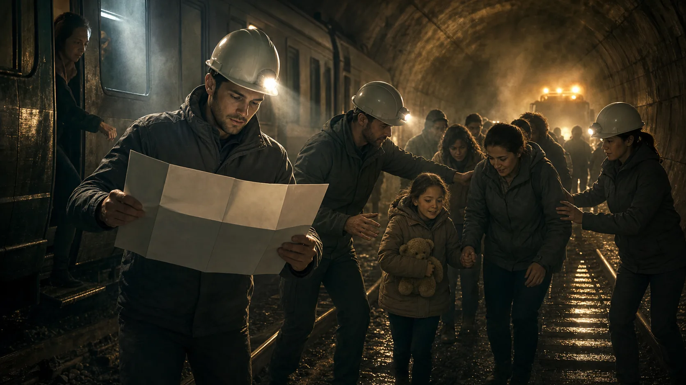
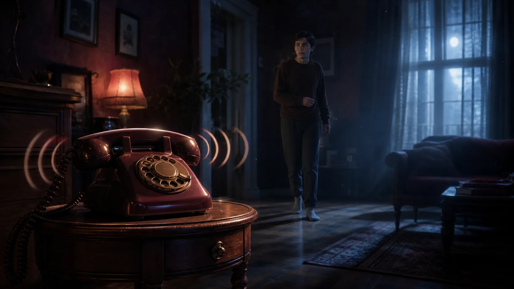

Podcasts em alemão lento A1/A2, grátis
10 histórias para iniciantes com áudio profissional em alemão, transcrição bilíngue frase por frase e tradução. Treine compreensão auditiva no seu ritmo, grátis e sem cadastro.
Der letzte Zug
Zwei Freunde stoppen einen führerlosen Zug. · A1/A2 · 1h3min
⚔️ AçãoAlarm im Hafen
Ein Lehrling entdeckt ein gefährliches Leck im Hafen. · A1/A2 · 47min

⚔️ AçãoDie Rettung im Tunnel
Eine Gruppe sucht Vermisste nach einem Stromausfall. · A1/A2 · 55min
⚔️ AçãoFeuer im Hotel
Eine junge Mitarbeiterin organisiert die Evakuierung. · A1/A2 · 56min
🧭 AventuraDie Insel der bunten Vögel
Eine Forschungsreise wird zur Rettung einer seltenen Vogelart. · A1/A2 · 1h22min
🧭 AventuraDer Weg zum Silbersee
Drei Freunde folgen einer Karte und helfen einer Berggemeinde bei ihrer Wasserversorgung. · A1/A2 · 1h26min
🧭 AventuraDie Reise des roten Ballons
Ein Ballon trägt zwei Freunde über fremde Länder. · A1/A2 · 1h57min
🕵️ SuspenseDie Schritte im Schnee
Ein Kind folgt fremden Spuren bis zum Wald. · A1/A2 · 50min

🕵️ SuspenseDer Anruf um Mitternacht
Ein altes Telefon klingelt jede Nacht. · A1/A2 · 49min
🕵️ SuspenseDas Flüstern im Radio
Ein Radio nennt Namen, bevor etwas geschieht. · A1/A2 · 49min